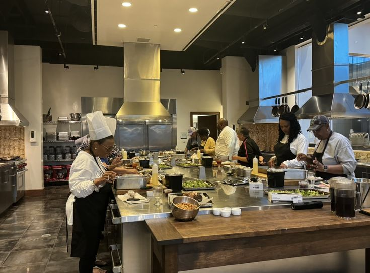

The Heritage Story
Born out of a deep love for authentic Nigerian culture and world-class hospitality, Eko Heritage is more than just a restaurant—it's a tribute to the resilient, vibrant, and flavorful spirit of Lagos.
What started as a vision to elevate traditional Nigerian cuisine has grown into a premier dining destination. We realized that fine dining doesn't mean leaving behind the rich, bold flavors of home.
Our journey is about bringing the soulful essence of the motherland to a luxurious, modern setting. From the smokey aroma of firewood Jollof to the fiery heat of our signature Asun, every dish is an ode to our roots.
